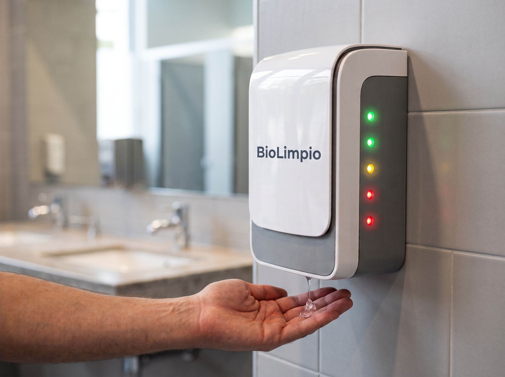

Dispensador automático de gel antibacterial para mejorar la higiene en entornos escolares
Conoce Más
BioLimpio es un proyecto tecnológico innovador diseñado específicamente para mejorar los hábitos de higiene en entornos escolares. Nuestro sistema automatizado de dispensado de gel antibacterial elimina la necesidad de contacto físico con superficies compartidas, reduciendo significativamente el riesgo de contaminación cruzada entre estudiantes.
Identificamos que en los baños escolares, las superficies como puertas, manijas y dispensadores manuales de jabón son puntos críticos de transmisión de gérmenes debido al constante contacto de múltiples usuarios. BioLimpio resuelve este problema mediante detección inteligente y activación automática.
Tecnología integrada para una solución higiénica completa
Unidad de control que procesa las señales del sensor y activa la bomba dispensadora según la detección de manos.
Detecta la aproximación de la mano del usuario sin contacto físico, triggering el mecanismo de dispensado automático.
Mecanismo de precisión que dispensa una cantidad determinada de gel antibacterial cuando es activada por el sistema de control.
Sistema de energía confiable que mantiene operativo todo el dispositivo, ya sea mediante baterías o conexión eléctrica directa.
Depósito seguro y hermético que almacena el solución antibacteriana lista para ser dispensada cuando se detecta la presencia de manos.
Infraestructura de conexión que asegura la comunicación eficiente entre todos los componentes electrónicos del sistema.
El sensor infrarrojo de proximidad identifica cuando un usuario se acerca al dispensador, enviando una señal al sistema de control para iniciar el proceso.
La unidad de control (ESP32) analiza la señal recibida para confirmar que se trata de una detección válida y no de interferencias externas.
Tras validar la detección, el sistema activa la mini bomba dispensadora durante un intervalo de tiempo predefinido.
La bomba presiona el recipiente de gel antibacterial, liberando una cantidad precisa y higiénica directamente en las manos del usuario.
Tras completar el ciclo, el sistema vuelve a su estado de espera, listo para detectar la próxima aproximación de manos sin intervención manual.
Elimina el contacto físico con superficies compartidas, reduciendo significativamente la transmisión de gérmenes y bacterias entre usuarios.
Interacción intuitiva y sin esfuerzo - los usuarios simplemente acercan sus manos y reciben gel automáticamente, sin necesidad de tocar botones o palancas.
Diseño modular que facilita el reemplazo de componentes y el rellenado del reservorio de gel antibacterial según sea necesario.
Sistema optimizado que consume energía únicamente durante el ciclo de detección y dispensado, entrando en modo de espera entre usos.
Diseño adaptable para instalación en múltiples puntos de un mismo entorno escolar, permitiendo una implementación gradual según necesidades y presupuesto.
Uso de materiales reciclables y componentes de bajo consumo energetico, contribuyendo a la reducción de la huella ambiental del dispositivo.